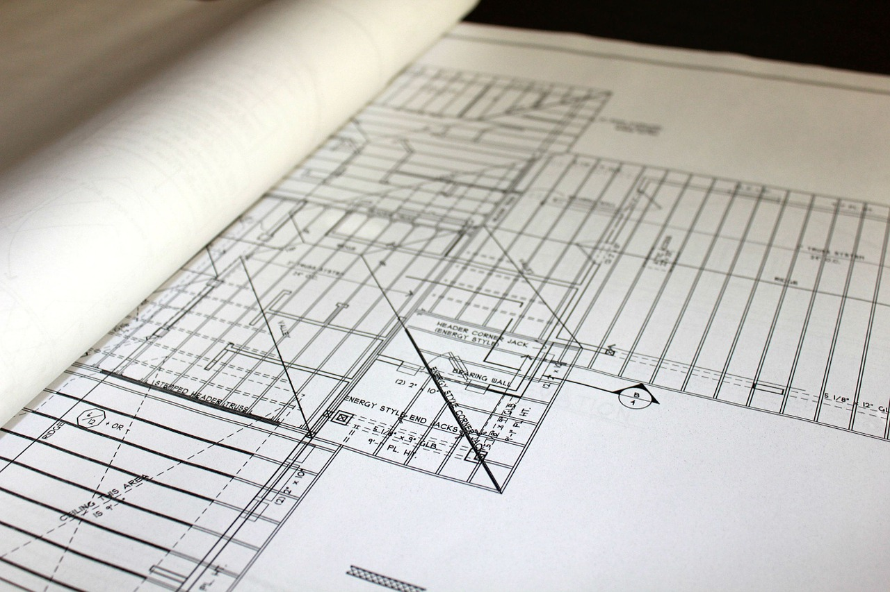

Who we are.

AWS Distribution Phils., Corp. was established in March 1997, when the need for structured cabling was at its peak. Due to the continuous rise of business opportunities nationwide, AWS Distribution Phils., Corp. then extended its operations in Visayas and Mindanao. Over the years, we have expanded not only our reach but also our efforts to be able to provide a wide array of products to cater to your Telecommunications, Power, Data, Voice & Security needs. In our effort to grow with the market, we recently ventured into distributing GREEN Products as to heed not only our role in providing our clientele topmost products, but in contributing ourshare in protecting the environment as well
How we do.
AWS Distribution Phils., Corp. was established in March 1997, when the need for structured cabling was at its peak. Due to the continuous rise of business opportunities nationwide, AWS Distribution Phils., Corp. then extended its operations in Visayas and Mindanao. Over the years, we have expanded not only our reach but also our efforts to be able to provide a wide array of products to cater to your Telecommunications, Power, Data, Voice & Security needs. In our effort to grow with the market, we recently ventured into distributing GREEN Products as to heed not only our role in providing our clientele topmost products, but in contributing ourshare in protecting the environment as well
What we give.
AWS Distribution Phils., Corp. was established in March 1997, when the need for structured cabling was at its peak. Due to the continuous rise of business opportunities nationwide, AWS Distribution Phils., Corp. then extended its operations in Visayas and Mindanao. Over the years, we have expanded not only our reach but also our efforts to be able to provide a wide array of products to cater to your Telecommunications, Power, Data, Voice & Security needs. In our effort to grow with the market, we recently ventured into distributing GREEN Products as to heed not only our role in providing our clientele topmost products, but in contributing ourshare in protecting the environment as well